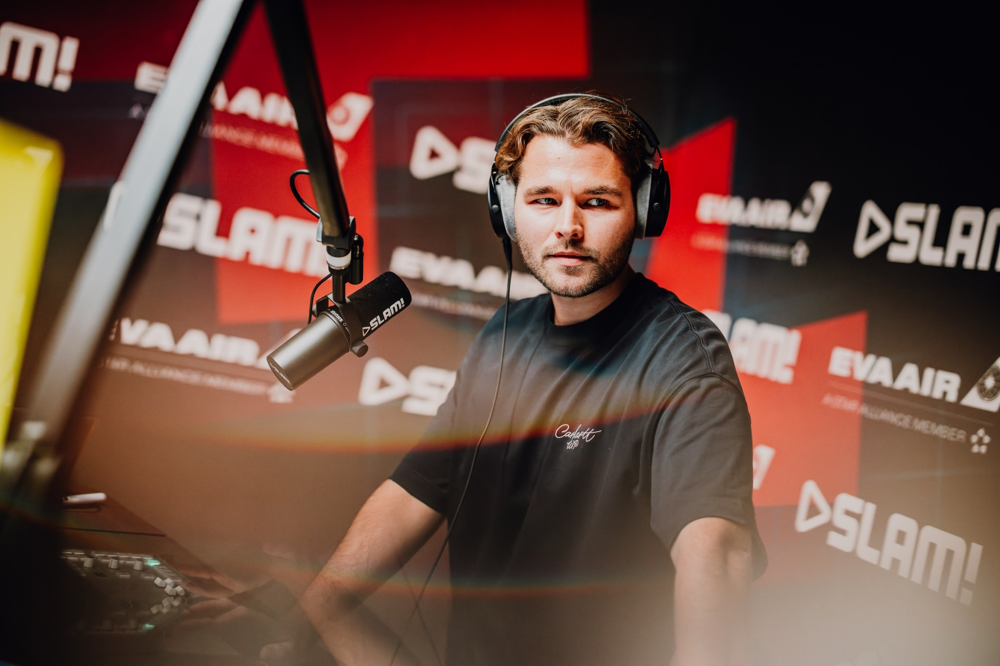
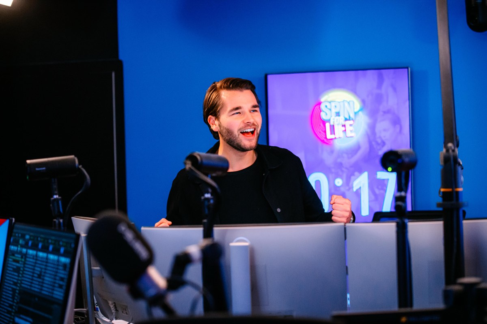

Presentator & dagvoorzitter



Op de radio
Radio is waar het voor Hielke begon, en waar zijn hart nog steeds sneller van gaat kloppen. Als vaste stem van SLAM! brengt hij elke show met energie, humor en scherpte. Hielke spreekt de taal van zijn luisteraars en voelt precies aan wat er speelt. Hij is een van de vaste presentatoren van Housuh in de Pauzuh, de SLAM! Mixmarathon en de SLAM! WKND MIX en heeft meerdere shows in het weekend bij SLAM!. Daarnaast is hij als invaller regelmatig te horen bij 100%NL.
Dagvoorzitter en event host
Als dagvoorzitter zorgt Hielke ervoor dat een evenement gesmeerd loopt. Hij stelt de juiste vragen, houdt de energie erin en brengt een luchtige, maar scherpe stijl. Van zakelijke congressen tot live talkshows, hij houdt het publiek bij de les en de sprekers scherp.
Video- en beeldpresentator
Voor de camera is Hielke een authentieke en toegankelijke presentator. Hij brengt verhalen helder over en weet kijkers te boeien, of het nu gaat om een YouTube-serie, een bedrijfsfilm of een commercial. Zijn ervaring op radio, tv en podium maakt dat hij moeiteloos schakelt tussen verschillende formats en stijlen. Weten wat Hielke voor jouw evenement of videoproductie kan betekenen? Neem vrijblijvend contact op!